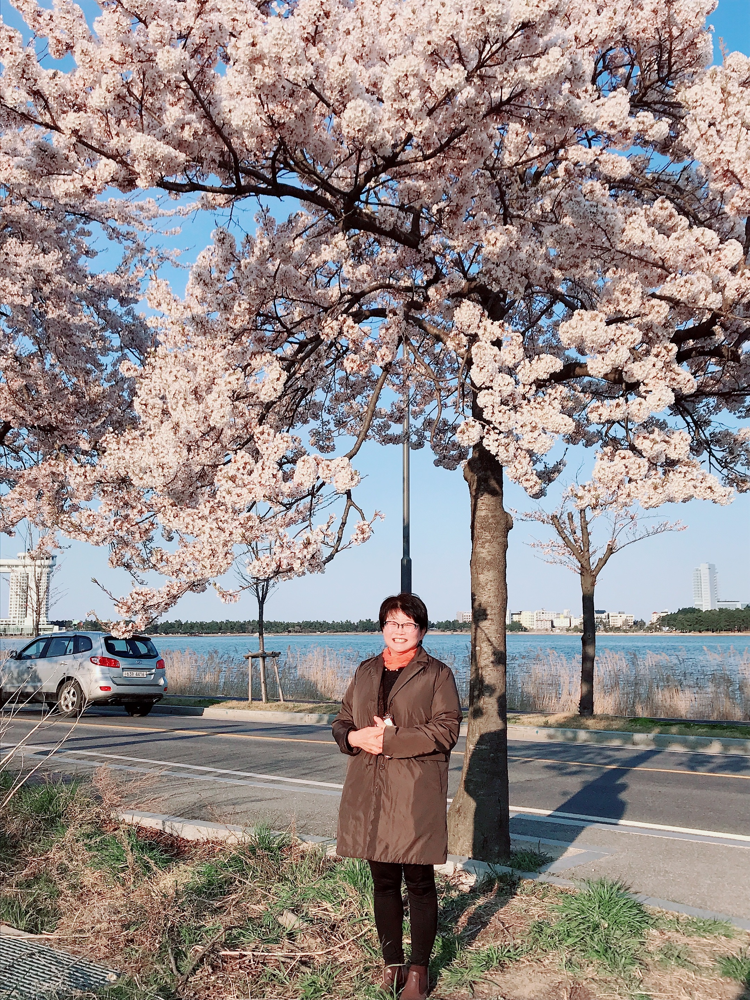

언제나 만족을 드립니다
더덕향을 찾아주셔서 늘 감사드립니다. 저희가 모시는 고객분들 한 분마다 만족을 드리기 위해 정성을 다해 노력하고 있습니다.
물론, 고객분들에게 언제나 만족을 드리는 것은 쉬운 말일수 있지만, 실천하기는 매우 어렵습니다.
저희로서 자기 만족에 불과할 수도 있겠지만, 고객분들과의 약속이므로 식당 개업 이후로 이를 어기지 않기 위해 저희만의 규칙을 만들어 지키고 있습니다.
1. 모든 음식에 국내산을 사용합니다.
더덕과 메밀, 김치 등은 중국산을 사용하면 현재 원가의 절반 수준으로 낮출 수 있습니다. 하지만 이는 저희 음식에 만족을 가져다 줄 수 없는 일이므로 저희는 절대로 외국산 재료를
사용하지 않습니다.
2. 모든 음식, 반찬 등은 수제로 만듭니다.
마찬가지로, 반찬과 음식들을 공장제 식품을 사용하면 식재료 원가를 절감할 수 있습니다. 하지만 저희 고객들은 공장제 음식을 먹기 위해 오신것이 아니라는 것을 알기에 모든 음식은 무조건 수제로
만듭니다.
3. 모든 식기류, 주방의 청결을 철처히 지킵니다.
식당의 위생은 모든 것의 기본입니다. 일부 이를 지키지 않는 식당이 나와 사람들에게 큰 충격을 안아주고 있습니다. 저희 식당은 매 번 주기적인 위생검사를 맡으며, 매일 종업원들이 식당의
위생상태를 책임지고 있습니다.
4. 음식은 풍족하게, 가격은 낮추고.
저희는 한 분의 고객이 하나의 음식을 시키셔도 열 가지가 넘는 반찬과 함께 제공이 됩니다. 하나를 드시더라고 만족하시면서 드실 수 있게 함입니다. 또 한, 가격은 10년동안 모든 메뉴
가격을
동결 중입니다. 이 또한, 고객분들께 만족을 드리기 위함입니다.
언제나 고객분들의 만족을 위해 노력하는 더덕향이 되겠습니다. 감사합니다.
더덕향 사장 올림